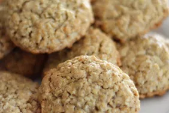

Oat Cookies

Description
a basic cookie containing rolled oats
Ingredients
- 90g flour
- 0.8g salt
- 3g baking soda
- 115g butter
- 150g brown suger
- 25g of egg about half a large egg beaten
- 5g vanilla extract
- 120g oats
Steps
- combine brown suger and butter into a bowl and cream them together with a sturdy spoon
- add egg and vanilla to suger mixture mix well
- add flour, salt and baking soda ontop of mixture use a fork or whisk to mix the dry
ingredients together then mix the dry ingredients with the wet
- mix oats into the batter and form into 40g balls
- place balls on baking sheet and bake at 350 F for 9-11 minutes
- let cookies cool for a few minutes then transfer to a cooling rack
- Enjoy